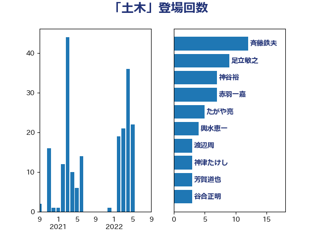

単語「土木」

| 斉藤鉄夫 | 公明党 | 12 回 |
| 足立敏之 | 自由民主党 | 9 回 |
| 神谷裕 | 立憲民主党 | 7 回 |
| 赤羽一嘉 | 公明党 | 7 回 |
| たがや亮 | れいわ新選組 | 5 回 |
| 輿水恵一 | 公明党 | 4 回 |
| 渡辺周 | 立憲民主党 | 3 回 |
| 神津たけし | 立憲民主党 | 3 回 |
| 芳賀道也 | 国民民主党 | 3 回 |
| 谷合正明 | 公明党 | 3 回 |
| 野上浩太郎 | 自由民主党 | 3 回 |
| 三木亨 | 自由民主党 | 2 回 |
| 五十嵐清 | 自由民主党 | 2 回 |
| 伊藤渉 | 公明党 | 2 回 |
| 伴野豊 | 立憲民主党 | 2 回 |
| 城井崇 | 立憲民主党 | 2 回 |
| 室井邦彦 | 日本維新の会 | 2 回 |
| 山崎正恭 | 公明党 | 2 回 |
| 武田良太 | 自由民主党 | 2 回 |
| 清水真人 | 自由民主党 | 2 回 |
| 石川香織 | 立憲民主党 | 2 回 |
| 進藤金日子 | 自由民主党 | 2 回 |
| 長峯誠 | 自由民主党 | 2 回 |
| 長浜博行 | 無所属 | 2 回 |
| 高橋光男 | 公明党 | 2 回 |
| 高橋千鶴子 | 日本共産党 | 2 回 |
| 上野通子 | 自由民主党 | 1 回 |
| 中山展宏 | 自由民主党 | 1 回 |
| 井林辰憲 | 自由民主党 | 1 回 |
| 古川禎久 | 自由民主党 | 1 回 |
| 嘉田由紀子 | 無所属 | 1 回 |
| 堀井学 | 自由民主党 | 1 回 |
| 塩田博昭 | 公明党 | 1 回 |
| 大塚耕平 | 国民民主党 | 1 回 |
| 宮崎雅夫 | 自由民主党 | 1 回 |
| 小池晃 | 日本共産党 | 1 回 |
| 小泉進次郎 | 自由民主党 | 1 回 |
| 小田原潔 | 自由民主党 | 1 回 |
| 山崎誠 | 立憲民主党 | 1 回 |
| 岩渕友 | 日本共産党 | 1 回 |
| 岸信夫 | 自由民主党 | 1 回 |
| 末松信介 | 自由民主党 | 1 回 |
| 枝野幸男 | 立憲民主党 | 1 回 |
| 柳ヶ瀬裕文 | 日本維新の会 | 1 回 |
| 田名部匡代 | 立憲民主党 | 1 回 |
| 矢倉克夫 | 公明党 | 1 回 |
| 福島みずほ | 社会民主党 | 1 回 |
| 穀田恵二 | 日本共産党 | 1 回 |
| 空本誠喜 | 日本維新の会 | 1 回 |
| 簗和生 | 自由民主党 | 1 回 |
| 細野豪志 | 自由民主党 | 1 回 |
| 菅義偉 | 自由民主党 | 1 回 |
| 萩生田光一 | 自由民主党 | 1 回 |
| 藤丸敏 | 自由民主党 | 1 回 |
| 西銘恒三郎 | 自由民主党 | 1 回 |
| 足立康史 | 日本維新の会 | 1 回 |
| 道下大樹 | 立憲民主党 | 1 回 |
| 酒井庸行 | 自由民主党 | 1 回 |
| 金子恵美 | 立憲民主党 | 1 回 |
| 鈴木義弘 | 国民民主党 | 1 回 |
| 長友慎治 | 国民民主党 | 1 回 |
| 高橋英明 | 日本維新の会 | 1 回 |
| 高見康裕 | 自由民主党 | 1 回 |